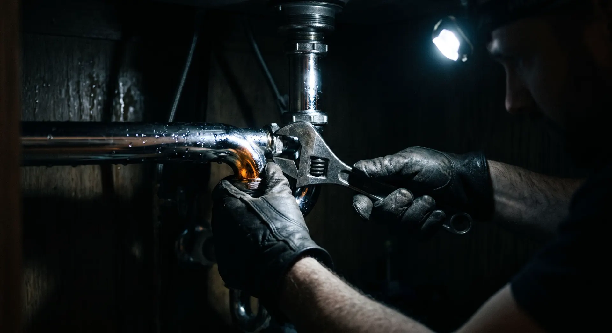
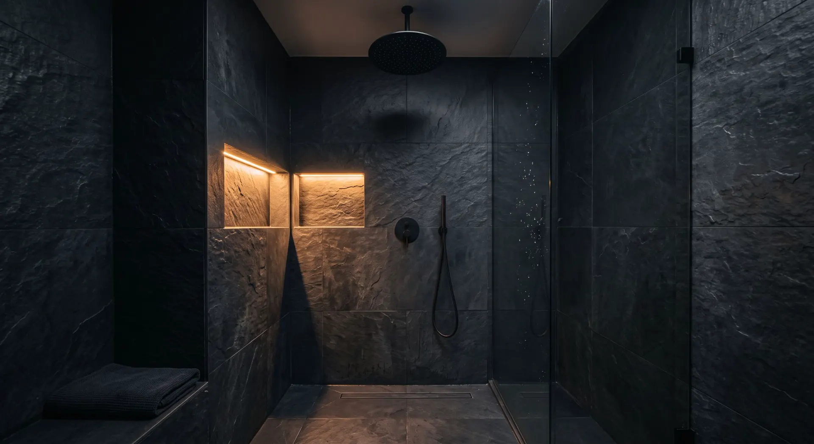

FT-01 · Plombier chauffagiste · Montreuil 93100
Une goutte
par seconde,
1 500 litres par an.
Fuites, débouchage, chaudière, salle de bains. Sous 24 heures dans l'est parisien, le jour même en urgence.
- Délai
- < 24 h
- Urgence
- jour même
- Devis
- écrit, gratuit
- Métier
- 17 ans
- Décennale
- AXA, à jour
- Recherche de fuite
- sans casse
- Déplacement
- offert à Montreuil
FT-02 · Diagnostic fuite
Trois questions,
et vous savez quoi faire.
Avant d'appeler, ou pendant que vous attendez : les bons gestes selon ce que vous voyez.
FT-03 · Prestations
Les prix, écrits
avant de commencer.

FT-04 · Méthode
On localise
avant de démonter.
Une fuite encastrée se cherche à la caméra thermique et au gaz traceur. On ouvre à l'endroit exact, sur quelques centimètres, au lieu de casser un mur pour trouver le tuyau.
Le rapport de recherche de fuite est remis le jour même. C'est lui que demande votre assurance pour un dégât des eaux.
FT-05 · Chaudière
Entre 1 et 2 bar,
tout va bien.
En dessous de 1 bar à froid, le circuit manque d'eau et la chaudière se met en sécurité. Au-dessus de 3 bar, la soupape s'ouvre. Dans les deux cas, un appel suffit souvent à régler le problème sans déplacement.
- < 1 bar
- à remettre en pression
- 1 – 2 bar
- normal à froid
- > 3 bar
- à purger, appelez

FT-06 · Rénovation
Salle de bains :
trois semaines,
un seul interlocuteur.
FT-07 · Zone d'intervention
Basé à Montreuil,
rue de Rosny.
- Montreuil15 min
- Bagnolet15 min
- Vincennes20 min
- Fontenay-sous-Bois20 min
- Rosny-sous-Bois20 min
- Saint-Mandé25 min
- Paris 20e25 min
- Paris 11e30 min
- Paris 12e30 min
FT-08 · Devis
Décrivez,
je rappelle.
Réponse dans les heures ouvrées. Pour une fuite active, le téléphone reste plus rapide.
07 82 41 66 30Lundi au vendredi 8 h – 19 h · Samedi 9 h – 13 h